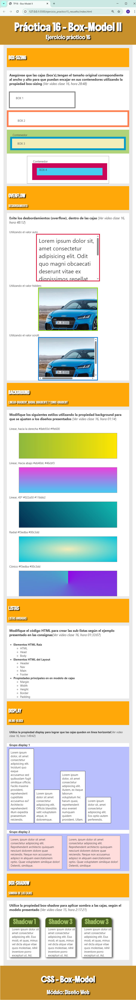

Ejercicio práctico Nº 16
Antes que nada
-
Descargue y descomprima el archivo trabajo_practico16.zip, este ya tiene las carpetas necesarias y el documento HTML para que pueda trabajar
-
Para el siguiente ejercicio, deberá entregar la carpeta del ejercicio en formato .zip con el nombre tp16_nombre_suyo
-
Fecha límite de entrega: viernes 11/04 23:59hs.
-
El título del documento es: "TP16 - Box-Model"
-
Siga al pie de la letra las instrucciones que se incluyen el archivo index.html y styles.css
-
Utilice el archivo styles.css que ya se encuentra en la carpeta css y vincúlelo con el documento html
- El presente ejercicio debe ser visualizado en pantalla de 720px (modelo tablet), como mínimo
-
Realice los ejercicios en el documento html de modo que se ajuste en diseño a la muestra presentada.
Muestra
